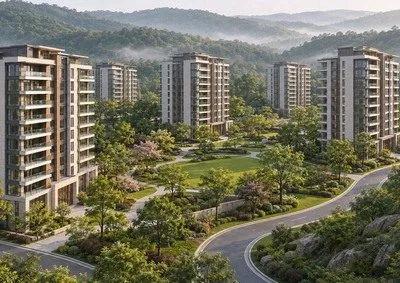

프로젝트 보기
-
도시 도시·건축 설계
-
이용자 공공·민간 건축
-
SUSTAINBILITY 환경 기준을 반영한 계획
-
TECHNOLOGY BIM 기반 설계 업무
SAEHAN ARCHITECTS
도시·건축 설계와 건설사업관리를 수행하는 새한종합건축사사무소
새한종합건축사사무소는 공공·민간 건축, 도시개발, 건설사업관리 업무를 수행합니다.
구성원
0
+
공공 건축
0
50+
주거 시설
0
50+
회사 설립 연도
0
+
업무시설
사무실과 연구실, 공공 업무 공간의 설계 업무를 수행합니다. 사업별 인원과 운영 방식에 따라 부서 공간, 회의실, 공용 시설을 계획합니다.
문화시설
문화회관과 체육시설, 주민 공동시설을 설계합니다. 운영 인원과 프로그램에 맞춰 관람·운동·모임 공간을 나눠 배치합니다.
새한 소식
새한종합건축사사무소의 공지와 사업 소식을 확인할 수 있습니다.
-
공모 선정 소식 서림시 초등학교 설계공모 선정
새한종합건축사사무소는 서림시 교육시설 설계공모에서 우선협상대상으로 선정됐다. 계획팀은 교실과 특별활동실, 급식 공간을 용도별로 배치했다. 사업지는 교육행정지구이며 교육연구시설로 계획한다. 부지 11,200㎡, 연면적 14,900㎡, 지하 1층·지상 4층 규모다. 교육시설의 학습 공간과 급식 공간을 용도별로 배치했다.
2026-11-05 -
 공모 선정 소식 서림 공공임대주택 정비 설계공모 선정
공모 선정 소식 서림 공공임대주택 정비 설계공모 선정서림시 공공주거지 정비 설계안이 공모 심사를 통과했다. 계획팀은 기존 주거 구역과 주민 공용시설을 함께 배치하는 안을 제출했다. 공동주택 부지는 22,800㎡이며 연면적은 118,000㎡다. 지하 3층, 지상 35층으로 계획한다. 공동주거와 주민 공용시설을 함께 다루는 정비 계획안이다.
2026-10-22 -
새한 소식 새한, 서림 소상공인 지원센터 건축상 수상
서림시 생활지원 복합센터가 지역 건축문화상 공공부문에 선정됐다. 복합센터는 소규모 사업자 지원 창구와 교육실, 상담실, 업무 공간으로 구성된다. 낮은 층에는 방문객 공용 구역을 두고, 상층에는 행정 및 운영 공간을 배치했다. 보행 진입부와 인접 도로를 검토해 출입 위치를 정했으며, 공용 회의실과 사무실 사이에는 운영 통로를 계획했다.
2026-10-19 -
사업 수주 소식 서림 주거단지 건축감리 업무 선정
건설사업관리팀이 서림시 주거환경 개선 사업의 감리 업무를 맡았다. 담당자는 계획과 현장 관리 업무를 나눠 수행한다. 대상은 공동주택이며 연면적은 126,000㎡, 세대 수는 840세대로 설정했다. 계획 관리와 현장 관리 업무를 구분해 수행한다.
2026-10-06 -

사업 수주 소식 서림 A-1구역 공동주택 건설사업관리 선정건설사업관리팀은 서림주택공사가 발주한 공공주택 현장의 시공 단계 관리 용역을 수주했다. 실무진은 공정과 설계도서, 현장 변경 사항을 확인한다. 공동주택 연면적은 42,600㎡다. 현장 변경 사항을 설계도서와 대조해 기록한다.
2026-09-22 -
 사업 수주 소식 서림 산림교육원 기본설계 업무 선정
사업 수주 소식 서림 산림교육원 기본설계 업무 선정새한종합건축사사무소가 설계에 참여한 공동수급체가 서림군 수목원 조성사업 실시설계 협상 대상자로 선정됐다. 참여팀은 공공시설과 관리시설의 배치안을 작성했다. 사업지는 서림군 산림문화지구에 있으며 문화·집회시설로 계획한다. 부지 면적은 2,840,000㎡, 건축면적은 7,600㎡, 연면적은 10,500㎡다. 지하 1층, 지상 3층 규모다. 문화시설과 관리시설의 규모 및 배치안을 제출했다.
2026-09-14
 도심 복합문화시설
도심 복합문화시설
 서림 세관업무 복합청사
서림 세관업무 복합청사
 다온시 행정복합청사
다온시 행정복합청사
 도시창업 지원센터
도시창업 지원센터
 서림 교산지구 공동주택
서림 교산지구 공동주택
 서림시 공공안전본부 청사
서림시 공공안전본부 청사
 서림 고속도로 휴게소
서림 고속도로 휴게소
- 01
WORKS
- 02
SERVICES
- 03
ABOUT
- 04
NEWS